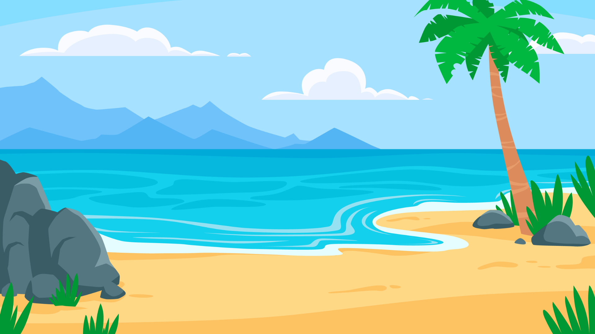
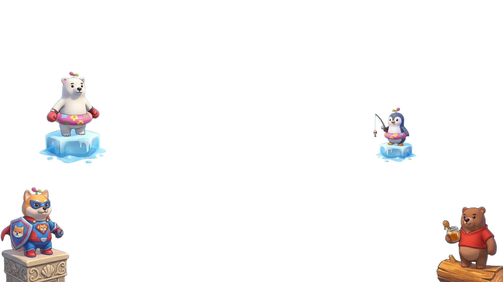
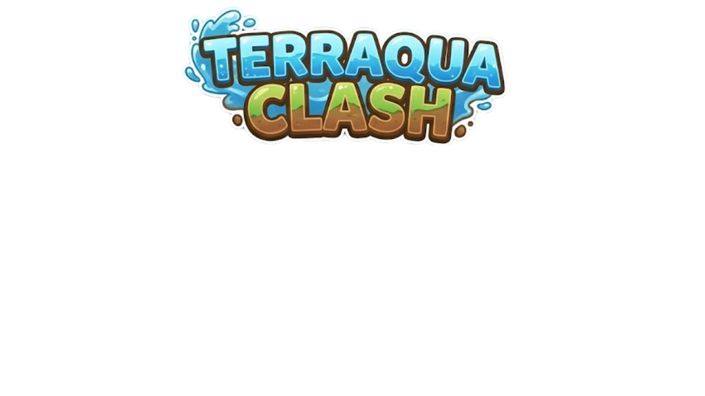

Terraqua Clash — a physics-based multiplayer animal survival arena
14
15
Life Below Water & Life On Land
Prototype · Local Play



| Seat | Controls | Animal |
|---|
Gamepads: plug one in and it takes over that seat automatically — left stick to move, bottom face button to dash.
Shove every other animal off the island before the timer runs out — while the island itself keeps turning from land into water underneath you.
Every collision transfers a push scaled by your Push stat and how fast you were moving. Hold a direction and slam into someone to nudge them; use Dash for a committed hit that sends light animals flying. Dash has a short cooldown, and missing leaves you skidding — so it is a real risk near an edge.
| Player | Move | Dash |
|---|---|---|
| Player 1 | WASD | Space |
| Player 2 | ↑←↓→ | Enter |
| Player 3 | IJKL | U |
| Player 4 | 8456 (numpad) | 0 (numpad) |
Connect a controller and press a button — it claims the lowest free seat. Left stick moves, the bottom face button dashes.
P or Esc pauses · R restarts the round · M mutes audio
The arena is not a flat platform with random puddles. Every tile has a fixed elevation, and the match has a single sea level that rises and falls in a slow cycle. Land is simply everything currently above that line.
Because the whole coastline moves at once, high ridges stay dry the longest and low flats flood first — so the map has real geography you can learn and play around, rather than tiles flipping at random.
Your stamina ring sits under your feet. Empty it and you are eliminated — so being caught in the wrong biome is just as lethal as being pushed off the edge, and a shove that strands someone counts as a kill in slow motion.
For the last 30 seconds the floor of the tide climbs permanently. Ground that used to resurface never does. The island shrinks from the outside in until there is barely a ridge left.
They spawn on the island every few seconds and expire if nobody grabs them. Walk over one to use it instantly.
Only one of each effect can run on you at a time, and picking up a second copy refreshes the timer rather than stacking it.
Most survival games are entertainment only. The concepts in SDG 14 (Life Below Water) and SDG 15 (Life on Land) are usually taught with static, text-heavy material that struggles to hold a younger audience. Terraqua Clash puts the idea in the mechanic instead of in a paragraph.
Capstone context: BSIT, University of Perpetual Help System Laguna. Pilot group — UPHSL student groups.
Each animal carries a real conservation note, shown again on the results screen after a match.
Thanks for playing the Terraqua Clash prototype.